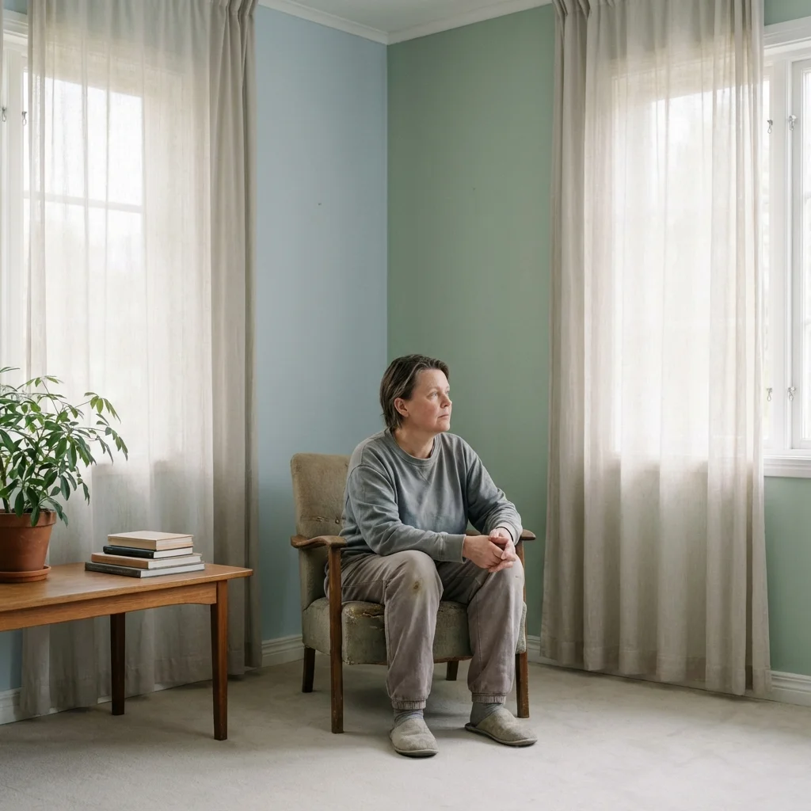
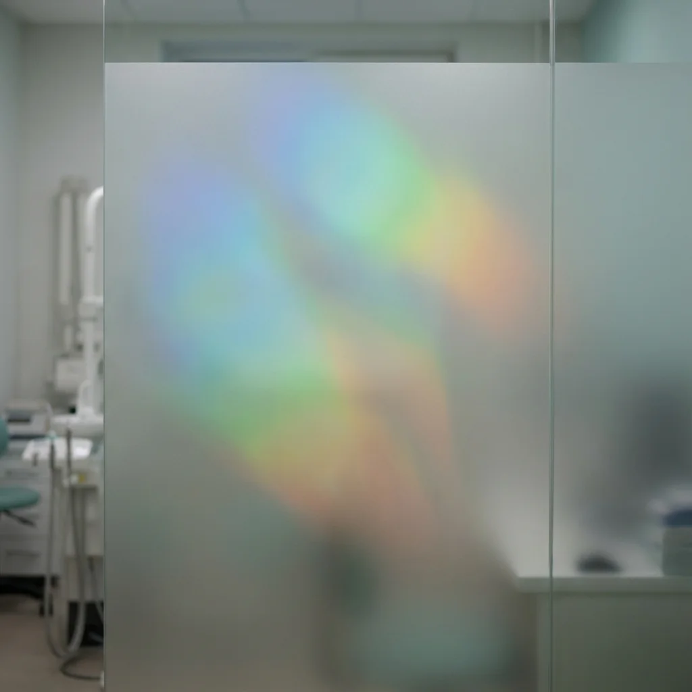

Jenis-Jenis Skizofrenia
Memahami berbagai tipe skizofrenia berdasarkan gejala dominan untuk penanganan yang lebih tepat.
Skizofrenia Hebeferenik
Tipe Disorganized
Ditandai dengan perilaku dan bicara yang kacau, serta respon emosional yang datar atau tidak sesuai situasi.
- Bicara tidak teratur
- Perilaku kekanak-kanakan
- Afek tidak serasi
Skizofrenia Katatonik
Gangguan Psikomotor

Ekstrem dalam perilaku fisik, bisa berupa diam mematung (stupor) atau gerakan berlebih tanpa tujuan.
- Stupor (tidak bergerak)
- Mutisme (membisu)
- Echolalia (meniru ucapan)
Skizofrenia Paranoid
Dominasi Halusinasi & Delusi
Tipe yang paling sering ditemui, ditandai dengan kecurigaan berlebih dan mendengar suara-suara yang tidak nyata, namun fungsi kognitif relatif terjaga.
Skizofrenia Residual
Fase Lanjutan

Gejala positif (halusinasi/delusi) sudah mereda, namun gejala negatif (penarikan diri, kurang motivasi) masih menetap.
- Pasif & apatis
- Penarikan sosial
- Perawatan diri kurang
Tak Terinci
Undifferentiated

Menunjukkan gejala skizofrenia yang jelas namun tidak memenuhi kriteria spesifik untuk tipe paranoid, hebeferenik, atau katatonik.
- Gejala campuran
- Diagnosis awal
- Perubahan tipe